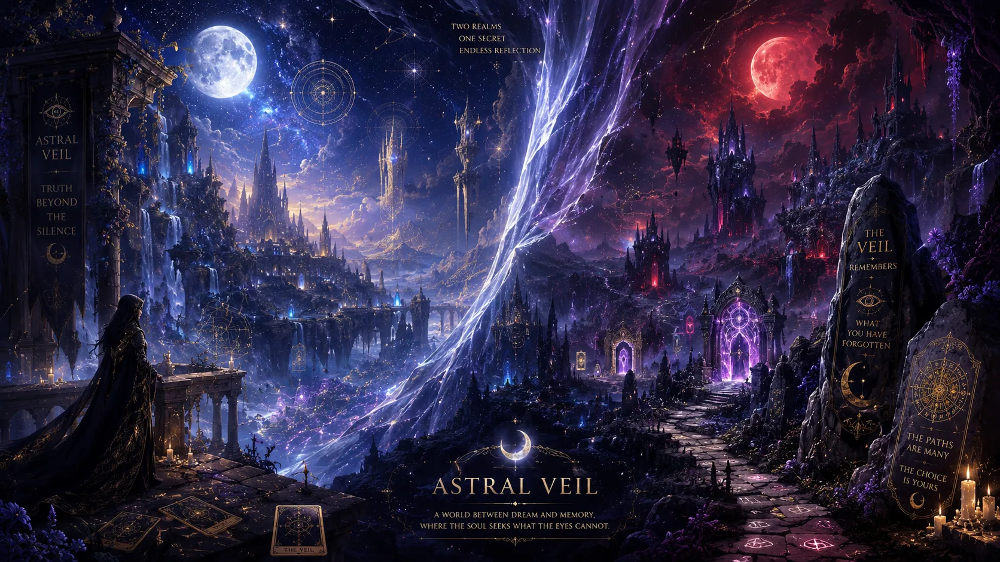

For Entertainment & Reflection
The readings are created for entertainment, personal reflection, and symbolic exploration. They are not meant to predict the future with certainty or replace professional advice.
About the veil
A mystical tarot experience crafted for reflection, atmosphere, and symbolic discovery.
Astral Veil blends tarot, visual design, storytelling, and interactive web development into a digital ritual space.
It is made for tarot lovers who enjoy mystery, atmosphere, and the quiet drama of revealing a card one moment at a time.
What Astral Veil Is
The readings are created for entertainment, personal reflection, and symbolic exploration. They are not meant to predict the future with certainty or replace professional advice.
Each guide has a distinct personality, tone, and energy. Choosing a reader changes the feeling of the ritual, from warm clarity to moonlit shadow work.
A world that continues to unfold.

Routes, clues, and quiet discoveries placed throughout the experience.
Guides, histories, and fragments that reveal themselves over time.
Objects, codes, and sealed pieces waiting to be recovered.
Unexpected moments for users who return and look closely.
It is not only a place to pull cards. It is a world meant to be explored, revisited, and slowly uncovered.
Future of the Veil
Deeper spreads and immersive reading experiences.
Meet the characters who guide and inspire your journey.
Explore stories, lore, and tarot knowledge through time.
Rituals, journaling, and intuitive tools to enrich your practice.
A growing circle of seekers, sharing insight and inspiration.
Coming Through the Veil
When the blue moon rises, it may not come alone.
Step into the veil and explore what awaits.
For entertainment and reflective purposes only.